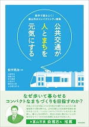

NEWS
2023年度
2023.6 第67回土木計画学研究発表会・春大会＠福岡大学に修士1回生の下岸，藤原が参加しました．
2023.4 新B4
新B4が配属されました！
2022年度
2023.2 修士論文公聴会にて修士2回生9名が発表しました。
詳細はこちら
2023.2 卒業論文公聴会にて学部4回生5名が発表しました。
詳細はこちら
2022.12 第57回都市計画学会全国大会＠宇都宮大学に修士1回生の汪、藤森、OBの平出が参加しました。
2022.11 第66回土木計画学研究発表会・秋大会＠琉球大学に修士2回生の石渡、伊藤、笠島、Alvin、修士1回生の河村、松尾が参加しました。
2022.10 研究生にWang ZhixianさんとZhang Mengyaさんを迎えました。
2022.9 6大学セミナーが開催されました。
2022.5 当研究室修士1回生の小西秀明が吉田卒業研究・論文賞を受賞しました！
2022.4 新B4
新B4が配属されました！
2022.4 新体制
当研究室に宇野伸宏先生が教授として着任されました。
また、大庭哲治先生が空間情報学講座に異動されました。
当研究室は今年度は宇野教授、松中准教授、田中助教のもと研究を進めていきます。
2021年度
2021.6 本が出版されます
『公共交通が人とまちを元気にする 数字で読みとく！富山市のコンパクトシティ戦略』
松中亮治 編著 大庭哲治・後藤正明・鈴木義康・辻堂史子・鎌田佑太郎・土生健太郎 著
詳細はこちら

2021.6 新体制
当研究室に田中皓介先生が助教として着任されました。
2021.5 当研究室修士1回生の石渡雄大が吉田卒業研究・論文賞を受賞しました！
2021.4 新B4
新B4が配属されました！
2020年度
2020.4 新B4
新B4が配属されました！
2019年度
2019.9 研究室旅行
今年は2泊3日で長崎に行きました！
軍艦島（上陸できず）・雲仙・島原・伊王島などを見学したほか、長崎市内を自由に観光しました。
2019.4 新B4
新B4が配属されました！
2018年度
2018.9 研究室旅行
今年は2泊3日で青森に行きました！
十和田湖・白神山地・三内丸山遺跡・不老ふ死温泉・大鰐温泉など、自然に囲まれた旅行でした。
2018.4 新B4
新B4が配属されました！
2017年度
2017.9 研究室旅行
今年は2泊3日で香港に行きました！
天候にも恵まれ、香港の街並みを散策したり、おいしい料理に舌鼓を打ちました！
2017.4 新B4
新B4が配属されました！
2017.4 新体制
当研究室で10年以上指導してくださった中川先生は
3月末で京都大学を辞職・4月より富山大学に就任されました。
当研究室は今年度は松中准教授、大庭助教のもと研究を進めていきます。
2016年度
2017.3 追いコン(彦根―米原―長浜)

今年の追いコンはなんと湖東での1泊2日でした！
皆さんの新天地での活躍を期待してます！
2017.2 当研究室修士2回生の鈴木克法が優秀修士論文賞を受賞しました！

当研究室から2年連続での受賞者輩出です。おめでとうございます！
2017.2 ホームページをリニューアルしました！